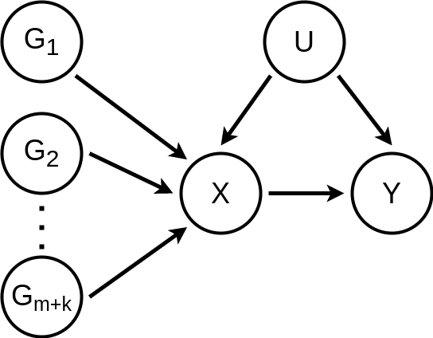

data_generating_process
Source:vignettes/articles/data_generating_process.Rmd
data_generating_process.RmdData generating process
Let
- \(X\): Exposure
- \(Y\): Outcome
- \(U\): Confounder
- \(G_i\) : Instrumental variable (SNP for the MR case)
Then, the assumed data generating process (DGP) is represented by the following DAG (directed acyclic graph)

and is defined by the following system of structural equations
\(G_i = \dfrac{G'_i - 2 p}{\sqrt{2 p (1 - p)}};\; \text{ for } i = 1, \ldots, m + k\)
\(U = \alpha_U + \sigma_U \varepsilon_U\)
\(X = \alpha_X + \beta_{U \rightarrow X} U + \sum\limits_{i = 1}^{m + k} \beta_{G_i \rightarrow X} G_i + \sigma_X \varepsilon_X\)
\(Y = \alpha_Y + \beta_{U \rightarrow Y} U + \beta_{X \rightarrow Y} X + \sigma_Y \varepsilon_Y\)
where
\(G'_i \sim \text{Binomial}(2, p);\; \text{ for } i = 1, \ldots, m + k\)
\(\varepsilon_U \sim \text{Normal}(0, 1)\)
\(\varepsilon_X \sim \text{Normal}(0, 1)\)
\(\varepsilon_Y \sim \text{Normal}(0, 1)\)
are assumed independent.
Restrictions and hyper parameters
Now, by assuming all non-zero effect \(G\)’s to have the same effect
\(\beta_{G_i \rightarrow X} = \beta_{G_j \rightarrow X};\; \forall i, j \leq m\)
and enforcing the standardized variable restrictions
\(\mathbb{E} G_i = \mathbb{E} U = \mathbb{E} X = \mathbb{E} Y = 0;\; \text{ for } i = 1, \ldots, m + k\)
\(\mathbb{V} G_i = \mathbb{V} U = \mathbb{V} X = \mathbb{V} Y = 1;\; \text{ for } i = 1, \ldots, m + k\)
one can fully calculate the DGP’s parameters with the following hyper parameters
- \(d\) : (Dimension) Number of \(G_i\)’s
- \(s\) : (Sparsity) Proportion of zero effect \(G_i\)’s
- \(p\) : (Skewness) Minor allele frequency of \(G_i\)’s
- \(r_{G \rightarrow X}^2\) : (Instrument strength) Variance in \(X\) explained per non-zero effect \(G\)
- \(r_{U \rightarrow X}^2\) : (Confouding level) Variance in \(X\) explained by \(U\)
- \(r_{U \rightarrow Y}^2\) : (Confouding level) Variance in \(Y\) explained by \(U\)
- \(\beta_{X \rightarrow Y}\) : (Target causal effect) Causal effect of \(X\) on \(Y\)
These hyper parameters are more meaningful due to the following reasons
- Reasonable values for \(d\) can be observed from real GWAS data
- Reasonable values for \(s\) can be estimated from real GWAS data or simply accessed by checking multiple values in the \([0, 1]\) interval
- Reasonable values for \(p\) can be estimated from real GWAS data or simply accessed by checking multiple values in the \([0, 0.5]\) interval
- Reasonable values for \(r_{G \rightarrow X}^2\) can be estimated from real GWAS data or simply accessed by checking multiple values in the \([0, 1]\) interval
- Reasonable values for \(r_{U \rightarrow X}^2\) can be accessed by checking multiple values in the \([0, 1]\) interval
- Reasonable values for \(r_{U \rightarrow Y}^2\) can be accessed by checking multiple values in the \([0, 1]\) interval
- \(\beta_{X \rightarrow Y}\) is the target causal effect and can be accessed by checking multiple values in the \([-1, 1]\) interval
Parameters formulas
Given the hyper parameters and restrictions, the parameters can be calculated as following
Effects
\(\beta_{G_i \rightarrow X} = 1(i \leq m) \sqrt{r_{G \rightarrow X}^2}\)
\(\beta_{U \rightarrow X} = \sqrt{r_{U \rightarrow X}^2}\)
\(\beta_{X \rightarrow Y} = \beta_{X \rightarrow Y}\)
\(\beta_{U \rightarrow Y} = \sqrt{r_{U \rightarrow Y}^2} - \beta_{X \rightarrow Y} \beta_{U \rightarrow X}\)
Noise scales
\(\sigma_U^2 = 1\)
\(\sigma_X^2 = 1 - \beta_{U \rightarrow X}^2 - \sum\limits_{i = 1}^{m + k} \beta_{G_i \rightarrow X}^2\)
\(\sigma_Y^2 = 1 - (\beta_{U \rightarrow Y} + \beta_{X \rightarrow Y} \beta_{U \rightarrow X})^2 - \beta_{X \rightarrow Y}^2 \sum\limits_{i = 1}^{m + k} \beta_{G_i \rightarrow X}^2 - \beta_{X \rightarrow Y}^2 \sigma_X^2\)